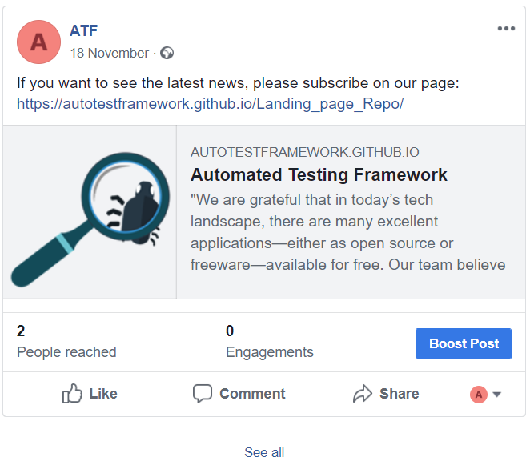

1. Add a lead collection section to your landing page
- We collected 19 subscribers and we plan to achieve more
- Receiving lots of positive reviews from users


2. Add analytics on your landing page
- 182 Pageviews
- Average Time on Page: 01:20
- Average Session Duration: 07:01 minutes
- New Visitor: 87.5% vs Returning Visitor: 12.5%
- Browsers: Chrome (57,14%) / Safari in-app (19,05%)/ Android Webview (14,29%)/ Safari (9,52%)
2. Add analytics on your landing page
- How did you find our site?
- If you could change anything on this page, what would you have us do?
- Is there anything on this page that doesn't work the way you expected it to?
- Were you able to find the information you were looking for?
- What other information would you like to see on this page?
- What could we do to make this site more useful?

3. Bring people on your landing page
Facebook versus Linkedin
Out of the two social networks we've promoted our product on, the one that returned the best results was Facebook (Check this link!) because it is the path to our closest friends and most relevant potential customers. Meanwhile, Linkedin (Check this link!) offered less satisfactory results because our connections there are mostly interested in jobs or potential employees, and not in software products.

4. Document the entire lead generating campaign on your Fiki


4. Document the entire lead generating campaign on your Fiki
Hotjar
Google Analytics
Combining both platforms, we used Google Analytics to report why our homepage has a very high bounce rate. Hotjar was used to show us why that is happening, using Heatmaps, recordings and polls. This allowed us to make the changes needed to decrease bounce rate.
Google Analytics and HotJar: the winning combination


Conclusions
Newsletter
Hotjar and Google Analytics